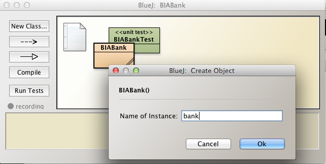
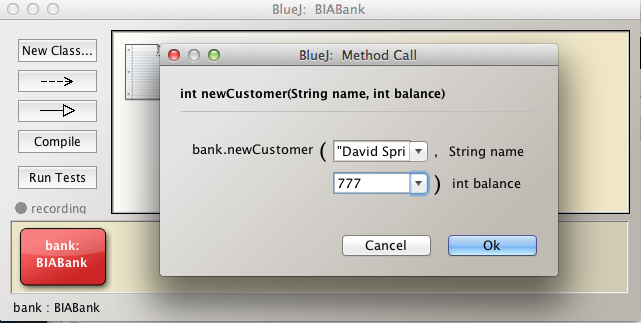
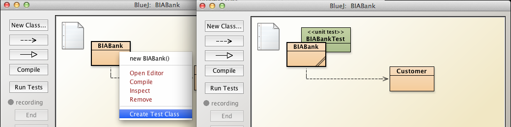
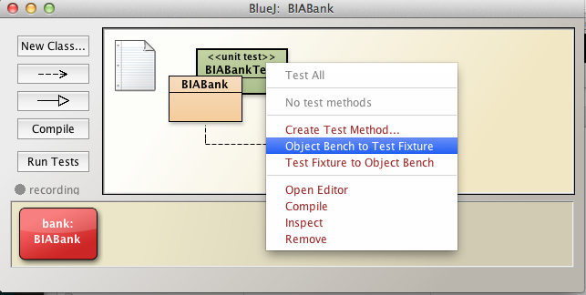
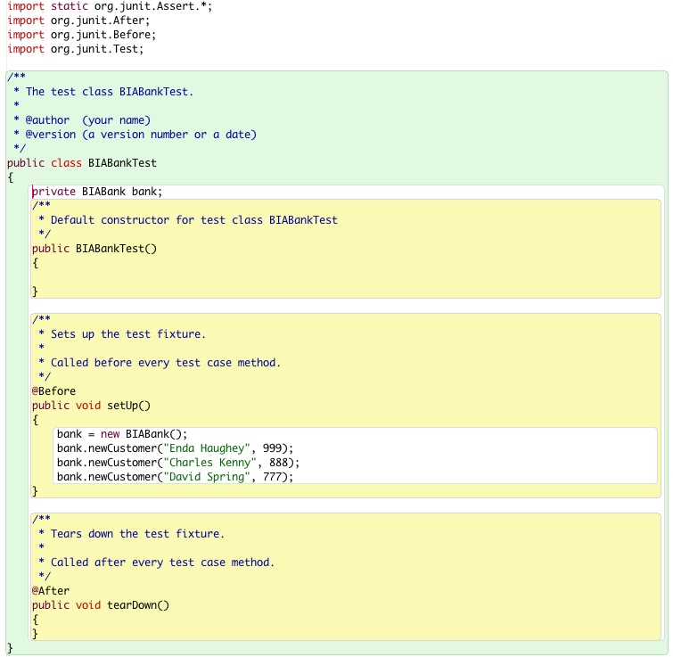
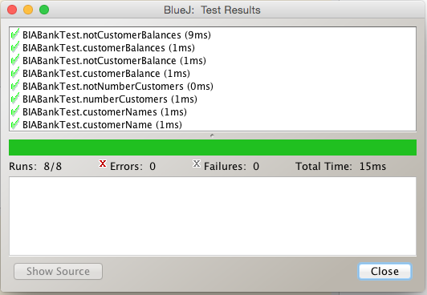

Objectives
These are the solutions to the labs in this session BlueJ Debug & Unit Test.
Exercise 1
Exercise
DiaryTester: Write the negative regression test capacityOverrun:
- Write this method and incorporate method into DiaryTester
- The method should attempt to add a single appointment that exceeds the length of a working day and returns false
- Run all regression tests to verify no errors introduced.
Solution
- Choose any day at random:
- We select day 0 as an example.
- Study the Day method and note static methods
- We use two of these in the code that follows
- Day.MAX_APPOINTMENTS_PER_DAY is based on 1-hour appointments
- This number is, therefore, also the number of available working hours in a day
- The idea is to create a single appointment that exceeds the length of the working day
- Then attempt to add this commencing at the start of the day
- The Day.makeAppointment method will return a false, qualifying capacityOverrun as a negative test.
public boolean capacityOverrun()
{
int dayNmr = 0;
Day day = new Day(dayNmr);
Appointment appointment = new Appointment("Capacity overrun test",
Day.MAX_APPOINTMENTS_PER_DAY + 1);
return day.makeAppointment(Day.START_OF_DAY, appointment);
}
Use this method in the unit test class, DiaryTesterTest, for example by including it in the suite of negative tests as shown here in this code snippet:
@Test
public void negativeTests()
{
...
assertEquals(false, diaryTester.capacityOverrun());
...
}
Exercise 2
Setup
This exercise comprises addition to and unit testing of BIABank class, developed in an earlier lab.
- Download the archive biabank.zip available here and expand it into your working folder workspaceBlueJ/labs/session06.
- In Windows Explorer, Finder or other file manager, navigate to workspaceBlueJ/labs/session06.
- biabank.zip should be expanded into this folder as a BlueJ project, BIABank (see Figure 1).
- Launch the project by double clicking on package.bluej within BIABank folder
- Open BIABank source file and observe that it closely matches BIABank_v5, the final iteration, developed in a previous session.
- Some refactoring has been applied to make for testing easier.
- the private access modifiers have been mostly removed.
- this allows package-wide access to the affected variables (see here).
- Some refactoring has been applied to make for testing easier.

Exercise 2 Task 1
Task 1
Observe the following field in BIABank:
- ArrayList
customers
Create a method in BIABank with this signature:
- public Customer getCustomer(String name)
The method searches through the list of customers for a customer matching the actual parameter name.
- If found, the corresponding Customer object is returned.
- Else return a new Customer object with parameters:
- "No such customer exists"
- 0
- 0
- study the signature of the Customer constructor if in doubt about the meaning of the above three parameters.
Task 1 Solution
/**
* Retrieve the Customer object associated with a customer name
* Should no such customer exist then, rather than null, return
* a Customer object with actual parameters shown here
* Customer("No such customer", 0, 0)
* Note that Customer constructor signature is:
* Customer(String name, int accountNumber, int balance)
*
* @param the name of the customer
* @return Customer object associated with customer name if it exists
* else Customer object with parameters Customer("No such customer", 0, 0)
**/
public Customer getCustomer(String name)
{
Iterator<Customer> it = customers.iterator();
while (it.hasNext())
{
Customer nextCustomer = it.next();
if (nextCustomer.name.equals(name))
{
return nextCustomer;
}
}
return new Customer("No such customer", 0, 0);//better alternative to null
}
Exercise 2 Task 2
Task 2
- Create a BIABank bank object on the object bench and add three customers:
bank.newCustomer("Enda Haughey", 999);
bank.newCustomer("Charles Kenny", 888);
bank.newCustomer("David Spring", 777);
-
Create a BIABank test class and create a fixture by invoking the following method on the test class:
- Object Bench to Test Fixture
- Inspect the test class code to verify the fixture has been written into to class.
Task 2 Solution
The solution to this exercise simply comprises executing the series of steps outlined, namely:
- Create the Bank bank object on the object bench (Figure 1)
- Create the three customer accounts specified (Figure 2)
- Create a BIABankTest class (Figure 3)
- Invoke Object Bench to Test Fixture on BIABankTest (Figure 4)
- Inspect source code and note existence of:
- BIABank bank field
- Instantiation of bank and creation new customers in void setUp()
- See Figure 5
    
Exercise 2 Tasks 3 - 10
Task 3
Write a positive test named numberCustomers:
- test that the number of customers is 3.
Task 3 Solution
We have the choice of adding test methods to BIABankTest class using the BlueJ recorder or manually. Here we shall use the latter approach.
Here is the required test method.
@Test
public void numberCustomers()
{
assertEquals(true, bank.customers.size() == 3);
}
Include numberCustomers in BIABankTest.java, compile and invoke Test All.
- Verify the test runs successfully.
Task 4
Write a positive test named customerName:
- Select one of the customer names
- Invoke the newly added method getCustomer to obtain the corresponding Customer object
- Get the customer name from the customer object
- Test that it matches the selected name
Task 4 Solution
Here is the method customerName:
@Test
public void customerName()
{
String name = "Enda Haughey";
Customer customer = bank.getCustomer(name);
assertEquals(true, customer.name.equals(name));
}
We have chosen, at random, one of the customer names from the list of three customers.
Task 5
Write a positive test named customerNames:
- Select one of the customer names
- Invoke the newly added method getCustomer to obtain the corresponding Customer object
- Get the customer name from the customer object
- Check that it matches the selected name, storing the result in a boolean variable.
- Repeat for the remaining 2 customers.
- Test that all three boolean variable are true.
Task 5 Solution
@Test
public void customerNames()
{
String name1 = "Enda Haughey";
Customer customer1 = bank.getCustomer(name1);
boolean b1 = customer1.name.equals(name1);
String name2 = "Charles Kenny";
Customer customer2 = bank.getCustomer(name2);
boolean b2 = customer2.name.equals(name2);
String name3 = "David Spring";
Customer customer3 = bank.getCustomer(name3);
boolean b3 = customer3.name.equals(name3);
assertEquals(true, b1 && b2 && b3);
}
Task 6
Write a positive test named customerBalance:
- Select one of the three customers' names
- Retrieve the Customer object for this customer
- Obtain the balance for the customer from the Customer object
- Test the balance matches the balance entered above in the fixture for the customer in question.
Task 6 Solution
@Test
public void customerBalance()
{
String name = "Enda Haughey";
Customer customer = bank.getCustomer(name);
assertEquals(true, customer.balance == 999);
}
Task 7
Write a positive test named customerBalances:
- Using a simiar approach to that used in customerBalance, obtain all the balances.
- Test the sum of the balances equals 999 + 888 + 777.
Task 7 Solution
@Test
public void customerBalances()
{
String name1 = "Enda Haughey";
Customer customer1 = bank.getCustomer(name1);
int balance1 = customer1.balance;
String name2 = "Charles Kenny";
Customer customer2 = bank.getCustomer(name2);
int balance2 = customer2.balance;
String name3 = "David Spring";
Customer customer3 = bank.getCustomer(name3);
int balance3 = customer3.balance;
assertEquals(true, balance1 + balance2 + balance3 == (999 + 888 + 777));
}
Task 8
Write a negative test in BIABankTest named notNumberCustomers.
- test that the number of customers is not, for example, 2.
Task 8 Solution
@Test
public void notNumberCustomers()
{
assertEquals(false, bank.customers.size() != 3);
}
Task 9
Write a negative test named notCustomerBalance:
- Select one of the three customers' names
- Retrieve the Customer object for this customer
- Obtain the balance for that customer from the Customer object
- Test the balance does not match a balance that you know to be incorrect.
Task 9 Solution
@Test
public void notCustomerBalance()
{
String name = "Enda Haughey";
Customer customer = bank.getCustomer(name);
assertEquals(false, customer.balance == 888);
}
Task 10
Write a negative test named notCustomerBalances:
- Using a simiar approach to that used in notCustomerBalance, obtain all the balances.
- Test the sum of the balances does not equal a balance you know to be incorrect, for example 20000.
Task 10 Solution
@Test
public void notCustomerBalances()
{
String name1 = "Enda Haughey";
Customer customer1 = bank.getCustomer(name1);
int balance1 = customer1.balance;
String name2 = "Charles Kenny";
Customer customer2 = bank.getCustomer(name2);
int balance2 = customer2.balance;
String name3 = "David Spring";
Customer customer3 = bank.getCustomer(name3);
int balance3 = customer3.balance;
assertEquals(false, balance1 + balance2 + balance3 == (2000));
}
When you have completed all the tasks invoke Test All on BIABankTest. The result should match that in Figure 1.
